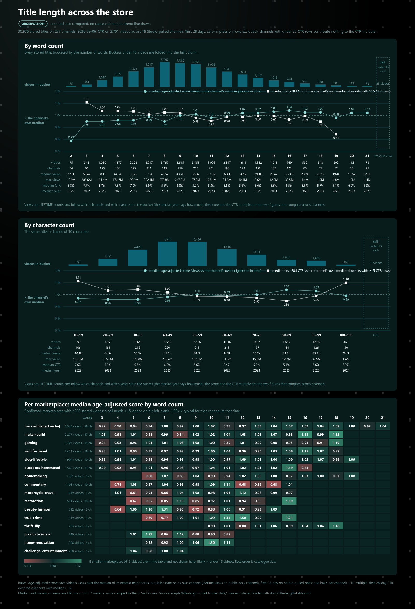

Influint · Channel Intelligence
Influint · Channel Intelligence

Title length, as a table
Generated 2026-09-06 by scripts/title-length-tables.ts over 30,976 stored videos on 237 channels. The same figures drawn: title-length-chart.png beside this file (scripts/title-length-chart.ts).
How to read it. Every stored title is bucketed by its word count (first table) and by its character count in bands of 10 (second table), within each confirmed marketplace and then over the whole store. Views are LIFETIME on every row (the one count every video carries), so a bucket's median and maximum are dominated by the largest channels in it and by the oldest uploads, and the median publish year beside them shows how much of any slope in views is the calendar; the score column is the age-adjusted outlier score (each video against its own channel's temporal neighbours, 1.00x = typical for that channel at that time) and is the column that compares across channels; CTR is first-28-day, Studio-pulled channels only, zero-impression rows excluded, and the last column is the same CTR divided by the channel's own median CTR (1.00x = what that channel usually gets; channels with under 20 CTR rows contribute nothing to it), which is the column that separates what a title length DOES from which channels happen to write it. Buckets under 15 videos are folded into one line so the tail is visible as a tail. No trend line is drawn and none is implied: this is where the catalogue sits, not why.
CTR is present on 3,701 videos across 19 channels; every other column covers the whole store.
All channels — 30,976 videos, 237 channels
By word count
| bucket | videos | channels | median year | median views | max views | median score | median CTR (n) | CTR vs own channel |
|---|---|---|---|---|---|---|---|---|
| 2 words | 75 | 46 | 2022 | 27,827 | 12,889,297 | 0.79x | 5.75% (9) | — |
| 3 words | 344 | 96 | 2022 | 59,438 | 285,644,155 | 0.95x | 7.69% (37) | 1.11x |
| 4 words | 1030 | 155 | 2023 | 58,110 | 164,376,592 | 0.95x | 8.70% (176) | 1.04x |
| 5 words | 1577 | 184 | 2023 | 64,509 | 176,663,269 | 0.96x | 7.50% (218) | 1.04x |
| 6 words | 2373 | 195 | 2023 | 59,236 | 190,937,076 | 0.96x | 6.97% (276) | 1.03x |
| 7 words | 3017 | 211 | 2023 | 57,550 | 222,355,159 | 0.99x | 5.86% (306) | 1.01x |
| 8 words | 3767 | 219 | 2023 | 45,615 | 278,784,903 | 0.95x | 5.61% (347) | 1.02x |
| 9 words | 3615 | 216 | 2023 | 43,685 | 247,238,689 | 1.00x | 6.00% (326) | 1.02x |
| 10 words | 3455 | 215 | 2023 | 38,295 | 57,309,518 | 1.01x | 5.20% (326) | 0.98x |
| 11 words | 3006 | 201 | 2023 | 33,587 | 127,142,953 | 0.98x | 5.32% (312) | 0.95x |
| 12 words | 2347 | 193 | 2023 | 32,785 | 31,646,340 | 0.99x | 5.58% (313) | 0.98x |
| 13 words | 1911 | 179 | 2023 | 34,112 | 10,386,772 | 1.02x | 5.58% (320) | 0.98x |
| 14 words | 1382 | 158 | 2023 | 29,111 | 5,562,069 | 1.02x | 5.60% (230) | 1.00x |
| 15 words | 1015 | 137 | 2023 | 28,392 | 12,217,061 | 1.03x | 5.82% (184) | 0.99x |
| 16 words | 769 | 121 | 2023 | 25,350 | 32,488,222 | 1.04x | 5.51% (157) | 0.96x |
| 17 words | 532 | 85 | 2023 | 23,158 | 4,426,955 | 1.02x | 5.64% (67) | 0.99x |
| 18 words | 348 | 73 | 2023 | 23,078 | 1,933,588 | 1.02x | 5.70% (51) | 0.95x |
| 19 words | 202 | 52 | 2023 | 19,413 | 1,803,691 | 0.98x | 5.13% (27) | 0.84x |
| 20 words | 113 | 35 | 2023 | 18,639 | 1,154,697 | 1.02x | 6.00% (12) | — |
| 21 words | 73 | 25 | 2023 | 21,954 | 1,418,194 | 1.02x | 5.25% (6) | — |
Buckets under 15 videos are not tabulated: 1 words, 22 words, 23 words hold 25 videos between them (median views 15,012, max 195,837).
By character count
| bucket | videos | channels | median year | median views | max views | median score | median CTR (n) | CTR vs own channel |
|---|---|---|---|---|---|---|---|---|
| 10–19 chars | 399 | 106 | 2022 | 40,075 | 129,875,175 | 0.97x | 7.61% (49) | 1.11x |
| 20–29 chars | 1951 | 181 | 2023 | 64,513 | 285,644,155 | 0.96x | 7.87% (281) | 1.03x |
| 30–39 chars | 4420 | 212 | 2023 | 55,295 | 278,784,903 | 0.96x | 6.70% (489) | 1.04x |
| 40–49 chars | 6580 | 220 | 2023 | 43,051 | 236,414,287 | 0.98x | 6.03% (641) | 1.02x |
| 50–59 chars | 6486 | 215 | 2023 | 38,848 | 152,893,590 | 1.00x | 5.59% (583) | 0.99x |
| 60–69 chars | 4516 | 213 | 2023 | 34,709 | 31,646,340 | 0.99x | 5.38% (506) | 0.98x |
| 70–79 chars | 3074 | 197 | 2023 | 35,239 | 14,975,374 | 1.00x | 5.45% (434) | 0.97x |
| 80–89 chars | 1689 | 154 | 2023 | 31,820 | 12,217,061 | 1.04x | 5.39% (336) | 0.95x |
| 90–99 chars | 1480 | 126 | 2023 | 33,257 | 32,488,222 | 1.03x | 5.60% (338) | 0.99x |
| 100–109 chars | 369 | 50 | 2024 | 26,575 | 1,418,194 | 0.99x | 6.19% (43) | 1.10x |
Buckets under 15 videos are not tabulated: 0–9 chars hold 12 videos between them (median views 28,638, max 234,116).
(no confirmed niche) — 8,545 videos, 58 channels
By word count
| bucket | videos | channels | median year | median views | max views | median score | median CTR (n) | CTR vs own channel |
|---|---|---|---|---|---|---|---|---|
| 3 words | 51 | 19 | 2024 | 51,437 | 995,794 | 0.92x | — | — |
| 4 words | 132 | 32 | 2023 | 15,439 | 1,030,107 | 0.90x | — | — |
| 5 words | 250 | 41 | 2023 | 20,463 | 4,101,977 | 0.94x | — | — |
| 6 words | 453 | 44 | 2023 | 27,427 | 1,074,102 | 0.94x | — | — |
| 7 words | 685 | 46 | 2023 | 33,861 | 4,669,631 | 1.00x | — | — |
| 8 words | 918 | 46 | 2023 | 37,065 | 1,707,127 | 0.97x | — | — |
| 9 words | 1043 | 45 | 2023 | 36,373 | 1,943,945 | 1.00x | — | — |
| 10 words | 1138 | 46 | 2023 | 37,182 | 4,452,802 | 1.02x | — | — |
| 11 words | 1044 | 44 | 2023 | 31,676 | 3,617,001 | 0.95x | — | — |
| 12 words | 784 | 40 | 2023 | 31,026 | 4,078,021 | 0.97x | — | — |
| 13 words | 558 | 41 | 2023 | 32,293 | 1,310,380 | 1.05x | — | — |
| 14 words | 407 | 35 | 2023 | 26,332 | 4,879,170 | 1.04x | — | — |
| 15 words | 282 | 34 | 2023 | 21,578 | 2,340,147 | 1.07x | — | — |
| 16 words | 231 | 34 | 2024 | 19,816 | 32,488,222 | 1.02x | — | — |
| 17 words | 195 | 22 | 2023 | 23,249 | 783,259 | 1.04x | — | — |
| 18 words | 140 | 19 | 2023 | 23,478 | 1,933,588 | 1.07x | — | — |
| 19 words | 105 | 13 | 2023 | 20,213 | 1,803,691 | 1.00x | — | — |
| 20 words | 65 | 11 | 2023 | 21,647 | 1,154,697 | 0.97x | — | — |
| 21 words | 43 | 9 | 2023 | 19,875 | 163,002 | 1.04x | — | — |
Buckets under 15 videos are not tabulated: 1 words, 2 words, 22 words, 23 words hold 21 videos between them (median views 13,455, max 995,565).
By character count
| bucket | videos | channels | median year | median views | max views | median score | median CTR (n) | CTR vs own channel |
|---|---|---|---|---|---|---|---|---|
| 10–19 chars | 66 | 23 | 2024 | 50,084 | 995,794 | 0.97x | — | — |
| 20–29 chars | 269 | 41 | 2024 | 19,951 | 1,345,984 | 0.92x | — | — |
| 30–39 chars | 785 | 48 | 2023 | 23,255 | 4,669,631 | 0.97x | — | — |
| 40–49 chars | 1605 | 48 | 2023 | 29,159 | 3,617,001 | 0.99x | — | — |
| 50–59 chars | 1887 | 47 | 2023 | 36,532 | 2,960,079 | 1.00x | — | — |
| 60–69 chars | 1522 | 43 | 2023 | 37,455 | 4,452,802 | 0.99x | — | — |
| 70–79 chars | 1205 | 45 | 2023 | 32,786 | 4,879,170 | 0.99x | — | — |
| 80–89 chars | 539 | 37 | 2023 | 26,841 | 4,670,620 | 1.03x | — | — |
| 90–99 chars | 465 | 31 | 2023 | 17,881 | 32,488,222 | 1.02x | — | — |
| 100–109 chars | 201 | 14 | 2024 | 23,254 | 310,987 | 1.02x | — | — |
Buckets under 15 videos are not tabulated: 0–9 chars hold 1 videos between them (median views 37,236, max 37,236).
maker-build — 7,277 videos, 57 channels
By word count
| bucket | videos | channels | median year | median views | max views | median score | median CTR (n) | CTR vs own channel |
|---|---|---|---|---|---|---|---|---|
| 3 words | 113 | 35 | 2019 | 178,212 | 7,825,608 | 1.03x | 5.63% (9) | — |
| 4 words | 309 | 50 | 2021 | 95,715 | 48,471,464 | 0.91x | 4.62% (25) | 1.24x |
| 5 words | 528 | 53 | 2021 | 108,315 | 16,622,775 | 1.01x | 4.38% (46) | 1.12x |
| 6 words | 719 | 55 | 2022 | 100,379 | 70,355,877 | 0.91x | 4.25% (71) | 1.09x |
| 7 words | 942 | 56 | 2022 | 98,801 | 18,627,312 | 0.99x | 4.42% (94) | 1.08x |
| 8 words | 1200 | 57 | 2021 | 60,258 | 18,289,690 | 0.84x | 4.24% (145) | 1.03x |
| 9 words | 848 | 54 | 2021 | 125,862 | 10,133,853 | 1.02x | 4.57% (120) | 1.04x |
| 10 words | 758 | 54 | 2021 | 97,530 | 12,507,188 | 1.02x | 4.40% (137) | 0.99x |
| 11 words | 572 | 48 | 2021 | 93,657 | 5,359,184 | 1.04x | 4.31% (114) | 0.93x |
| 12 words | 390 | 45 | 2021 | 91,549 | 31,646,340 | 1.03x | 4.23% (84) | 0.94x |
| 13 words | 328 | 42 | 2021 | 98,115 | 10,386,772 | 1.03x | 4.75% (76) | 0.98x |
| 14 words | 191 | 30 | 2021 | 90,841 | 5,562,069 | 1.07x | 4.50% (39) | 0.98x |
| 15 words | 150 | 30 | 2021 | 75,540 | 4,417,095 | 0.98x | 4.49% (33) | 1.00x |
| 16 words | 100 | 24 | 2022 | 85,342 | 4,910,272 | 1.31x | 4.69% (26) | 0.97x |
| 17 words | 70 | 17 | 2023 | 46,830 | 4,426,955 | 0.99x | 4.65% (16) | 0.99x |
| 18 words | 23 | 12 | 2022 | 48,092 | 948,084 | 1.32x | 5.54% (6) | — |
Buckets under 15 videos are not tabulated: 1 words, 2 words, 19 words, 20 words, 21 words, 22 words hold 36 videos between them (median views 46,690, max 955,763).
By character count
| bucket | videos | channels | median year | median views | max views | median score | median CTR (n) | CTR vs own channel |
|---|---|---|---|---|---|---|---|---|
| 10–19 chars | 98 | 33 | 2021 | 118,289 | 3,150,889 | 0.92x | 5.23% (8) | — |
| 20–29 chars | 667 | 53 | 2021 | 110,094 | 48,471,464 | 0.96x | 4.47% (66) | 1.16x |
| 30–39 chars | 1515 | 56 | 2022 | 95,006 | 70,355,877 | 0.91x | 4.33% (134) | 1.11x |
| 40–49 chars | 1844 | 56 | 2021 | 94,047 | 18,627,312 | 0.94x | 4.38% (200) | 1.09x |
| 50–59 chars | 1344 | 55 | 2021 | 103,301 | 15,605,705 | 1.00x | 4.77% (215) | 1.00x |
| 60–69 chars | 847 | 52 | 2021 | 92,611 | 31,646,340 | 1.03x | 4.36% (180) | 0.95x |
| 70–79 chars | 540 | 49 | 2021 | 75,208 | 10,386,772 | 0.99x | 4.46% (148) | 0.94x |
| 80–89 chars | 245 | 32 | 2022 | 70,621 | 4,910,272 | 1.16x | 4.42% (60) | 0.94x |
| 90–99 chars | 152 | 25 | 2022 | 97,639 | 4,417,095 | 1.07x | 4.67% (34) | 0.99x |
| 100–109 chars | 23 | 7 | 2025 | 37,452 | 309,169 | 0.75x | 4.56% (2) | — |
Buckets under 15 videos are not tabulated: 0–9 chars hold 2 videos between them (median views 173,932, max 234,116).
gaming — 3,407 videos, 14 channels
By word count
| bucket | videos | channels | median year | median views | max views | median score | median CTR (n) | CTR vs own channel |
|---|---|---|---|---|---|---|---|---|
| 3 words | 39 | 5 | 2026 | 652,189 | 285,644,155 | 0.91x | 8.92% (12) | — |
| 4 words | 209 | 11 | 2026 | 236,814 | 156,182,991 | 0.98x | 9.04% (111) | 1.00x |
| 5 words | 258 | 12 | 2026 | 391,541 | 168,412,751 | 0.96x | 9.25% (87) | 1.02x |
| 6 words | 320 | 14 | 2026 | 423,032 | 159,442,479 | 1.04x | 9.04% (90) | 1.00x |
| 7 words | 283 | 14 | 2026 | 346,322 | 183,651,264 | 1.01x | 8.85% (71) | 0.98x |
| 8 words | 246 | 13 | 2025 | 107,451 | 156,555,774 | 1.08x | 9.10% (50) | 1.01x |
| 9 words | 360 | 13 | 2021 | 3,037 | 247,238,689 | 1.08x | 8.91% (32) | 0.99x |
| 10 words | 407 | 12 | 2021 | 2,187 | 57,309,518 | 1.00x | 8.88% (10) | — |
| 11 words | 321 | 10 | 2021 | 1,660 | 1,253,877 | 0.89x | 8.68% (10) | — |
| 12 words | 301 | 8 | 2021 | 1,310 | 727,609 | 1.01x | 8.11% (2) | — |
| 13 words | 264 | 7 | 2021 | 1,193 | 783,776 | 0.99x | — | — |
| 14 words | 162 | 6 | 2022 | 1,537 | 376,855 | 0.98x | — | — |
| 15 words | 95 | 5 | 2021 | 1,610 | 185,083 | 0.95x | — | — |
| 16 words | 51 | 3 | 2022 | 930 | 9,390 | 0.94x | — | — |
| 17 words | 47 | 4 | 2022 | 1,232 | 12,753 | 0.91x | — | — |
| 18 words | 29 | 3 | 2022 | 1,216 | 6,412 | 1.19x | — | — |
Buckets under 15 videos are not tabulated: 19 words, 20 words, 21 words, 22 words hold 15 videos between them (median views 1,851, max 19,666).
By character count
| bucket | videos | channels | median year | median views | max views | median score | median CTR (n) | CTR vs own channel |
|---|---|---|---|---|---|---|---|---|
| 10–19 chars | 20 | 4 | 2026 | 440,948 | 115,065,657 | 1.31x | 9.13% (11) | — |
| 20–29 chars | 327 | 13 | 2026 | 335,213 | 285,644,155 | 0.97x | 9.03% (122) | 1.00x |
| 30–39 chars | 605 | 14 | 2026 | 380,043 | 247,238,689 | 1.04x | 9.08% (157) | 1.00x |
| 40–49 chars | 822 | 14 | 2024 | 8,006 | 183,651,264 | 1.00x | 9.03% (129) | 1.00x |
| 50–59 chars | 844 | 12 | 2021 | 2,154 | 61,938,188 | 0.95x | 8.84% (44) | 0.98x |
| 60–69 chars | 468 | 11 | 2021 | 1,562 | 1,268,154 | 1.04x | 9.49% (10) | — |
| 70–79 chars | 209 | 8 | 2022 | 1,271 | 94,960 | 0.96x | 7.39% (1) | — |
| 80–89 chars | 71 | 6 | 2022 | 1,209 | 176,345 | 0.93x | 8.09% (1) | — |
| 90–99 chars | 41 | 4 | 2021 | 504 | 185,083 | 0.98x | — | — |
vanlife-travel — 2,411 videos, 18 channels
By word count
| bucket | videos | channels | median year | median views | max views | median score | median CTR (n) | CTR vs own channel |
|---|---|---|---|---|---|---|---|---|
| 3 words | 35 | 6 | 2022 | 20,600 | 177,013 | 0.93x | — | — |
| 4 words | 127 | 12 | 2020 | 10,051 | 4,166,121 | 1.01x | — | — |
| 5 words | 99 | 15 | 2023 | 26,810 | 1,815,731 | 0.90x | 7.76% (1) | — |
| 6 words | 176 | 16 | 2023 | 33,335 | 5,184,857 | 0.97x | 5.56% (3) | — |
| 7 words | 203 | 18 | 2023 | 34,261 | 913,407 | 0.97x | 8.78% (1) | — |
| 8 words | 256 | 18 | 2023 | 33,799 | 1,573,607 | 0.99x | 6.65% (7) | — |
| 9 words | 288 | 18 | 2023 | 38,576 | 1,399,786 | 0.99x | 9.97% (4) | — |
| 10 words | 268 | 18 | 2023 | 38,732 | 1,946,267 | 1.06x | 6.30% (12) | — |
| 11 words | 271 | 18 | 2023 | 33,709 | 4,885,758 | 1.04x | 6.55% (7) | — |
| 12 words | 210 | 16 | 2023 | 29,949 | 3,498,234 | 0.96x | 7.14% (11) | — |
| 13 words | 171 | 16 | 2023 | 29,522 | 2,415,068 | 0.96x | 7.23% (4) | — |
| 14 words | 113 | 17 | 2023 | 24,262 | 2,538,083 | 1.03x | 7.25% (5) | — |
| 15 words | 59 | 11 | 2021 | 20,078 | 474,942 | 1.08x | 7.05% (1) | — |
| 16 words | 44 | 13 | 2022 | 15,651 | 128,929 | 1.15x | 7.37% (1) | — |
| 17 words | 29 | 8 | 2022 | 16,130 | 941,560 | 1.07x | — | — |
| 18 words | 18 | 7 | 2022 | 17,327 | 127,813 | 0.97x | — | — |
Buckets under 15 videos are not tabulated: 1 words, 2 words, 19 words, 20 words, 21 words, 22 words hold 44 videos between them (median views 16,691, max 1,418,194).
By character count
| bucket | videos | channels | median year | median views | max views | median score | median CTR (n) | CTR vs own channel |
|---|---|---|---|---|---|---|---|---|
| 10–19 chars | 74 | 8 | 2019 | 8,988 | 190,144 | 0.99x | — | — |
| 20–29 chars | 201 | 15 | 2023 | 26,855 | 4,166,121 | 0.96x | — | — |
| 30–39 chars | 335 | 18 | 2023 | 32,231 | 1,039,223 | 0.98x | 6.98% (4) | — |
| 40–49 chars | 519 | 18 | 2023 | 36,438 | 5,184,857 | 1.00x | 6.63% (16) | 0.96x |
| 50–59 chars | 502 | 17 | 2023 | 34,431 | 3,498,234 | 0.99x | 6.99% (15) | 1.02x |
| 60–69 chars | 410 | 18 | 2023 | 30,851 | 4,885,758 | 0.98x | 6.87% (17) | 1.00x |
| 70–79 chars | 209 | 16 | 2023 | 25,829 | 947,754 | 1.00x | 7.58% (5) | — |
| 80–89 chars | 105 | 12 | 2022 | 28,203 | 941,560 | 1.19x | 3.77% (1) | — |
| 90–99 chars | 46 | 13 | 2021 | 13,882 | 474,942 | 1.04x | 7.72% (2) | — |
Buckets under 15 videos are not tabulated: 0–9 chars, 100–109 chars hold 10 videos between them (median views 13,590, max 1,418,194).
vlog-lifestyle — 1,904 videos, 10 channels
By word count
| bucket | videos | channels | median year | median views | max views | median score | median CTR (n) | CTR vs own channel |
|---|---|---|---|---|---|---|---|---|
| 3 words | 27 | 7 | 2020 | 16,989 | 212,296 | 0.95x | 5.83% (9) | — |
| 4 words | 53 | 9 | 2021 | 20,401 | 470,166 | 0.98x | 6.95% (18) | 1.08x |
| 5 words | 90 | 8 | 2021 | 20,834 | 809,861 | 1.01x | 6.74% (46) | 1.07x |
| 6 words | 133 | 9 | 2021 | 19,886 | 1,293,375 | 0.94x | 6.25% (53) | 1.11x |
| 7 words | 168 | 9 | 2022 | 21,057 | 3,136,055 | 0.96x | 5.61% (81) | 1.05x |
| 8 words | 208 | 9 | 2022 | 18,858 | 4,544,130 | 0.99x | 6.10% (90) | 1.06x |
| 9 words | 215 | 9 | 2023 | 19,730 | 8,296,283 | 0.98x | 6.02% (82) | 1.02x |
| 10 words | 209 | 9 | 2023 | 25,866 | 15,302,269 | 1.00x | 5.81% (88) | 1.00x |
| 11 words | 189 | 8 | 2023 | 25,977 | 2,291,974 | 0.97x | 6.14% (82) | 0.97x |
| 12 words | 149 | 10 | 2023 | 26,905 | 1,220,082 | 1.09x | 5.85% (69) | 0.98x |
| 13 words | 124 | 9 | 2023 | 22,366 | 2,367,487 | 1.01x | 6.30% (62) | 0.98x |
| 14 words | 94 | 9 | 2023 | 23,919 | 4,104,775 | 1.04x | 6.00% (56) | 0.97x |
| 15 words | 72 | 7 | 2023 | 18,073 | 583,736 | 1.00x | 6.29% (53) | 0.98x |
| 16 words | 76 | 9 | 2022 | 19,310 | 393,389 | 1.02x | 5.58% (56) | 0.85x |
| 17 words | 30 | 5 | 2021 | 22,255 | 188,308 | 1.07x | 5.98% (23) | 0.91x |
| 18 words | 29 | 4 | 2021 | 14,020 | 47,941 | 0.96x | 5.33% (27) | 0.81x |
| 19 words | 17 | 2 | 2021 | 13,532 | 91,535 | 1.09x | 5.33% (16) | 0.81x |
Buckets under 15 videos are not tabulated: 2 words, 20 words, 21 words hold 21 videos between them (median views 16,376, max 166,647).
By character count
| bucket | videos | channels | median year | median views | max views | median score | median CTR (n) | CTR vs own channel |
|---|---|---|---|---|---|---|---|---|
| 10–19 chars | 47 | 7 | 2021 | 26,703 | 435,356 | 0.93x | 7.47% (17) | 1.21x |
| 20–29 chars | 103 | 8 | 2020 | 18,131 | 640,314 | 1.07x | 6.83% (46) | 1.08x |
| 30–39 chars | 231 | 10 | 2021 | 22,048 | 4,544,130 | 0.94x | 6.21% (108) | 1.06x |
| 40–49 chars | 366 | 10 | 2022 | 18,667 | 8,296,283 | 0.99x | 6.13% (182) | 1.04x |
| 50–59 chars | 396 | 8 | 2023 | 22,562 | 15,302,269 | 1.01x | 6.01% (169) | 0.99x |
| 60–69 chars | 325 | 10 | 2023 | 25,866 | 4,104,775 | 0.99x | 6.30% (142) | 1.03x |
| 70–79 chars | 208 | 10 | 2023 | 22,759 | 2,367,487 | 1.02x | 5.92% (104) | 0.96x |
| 80–89 chars | 119 | 9 | 2022 | 19,381 | 729,908 | 1.00x | 5.79% (74) | 0.88x |
| 90–99 chars | 98 | 8 | 2021 | 16,382 | 252,965 | 1.03x | 5.49% (75) | 0.84x |
Buckets under 15 videos are not tabulated: 0–9 chars, 100–109 chars hold 11 videos between them (median views 16,609, max 91,535).
outdoors-homestead — 1,569 videos, 13 channels
By word count
| bucket | videos | channels | median year | median views | max views | median score | median CTR (n) | CTR vs own channel |
|---|---|---|---|---|---|---|---|---|
| 3 words | 37 | 6 | 2022 | 11,587 | 282,045 | 0.99x | — | — |
| 4 words | 70 | 8 | 2023 | 18,803 | 314,448 | 0.92x | — | — |
| 5 words | 122 | 10 | 2023 | 29,247 | 1,368,022 | 0.95x | — | — |
| 6 words | 200 | 10 | 2021 | 25,044 | 2,966,049 | 1.01x | — | — |
| 7 words | 202 | 13 | 2022 | 37,246 | 253,252 | 0.96x | — | — |
| 8 words | 220 | 13 | 2023 | 32,055 | 2,987,149 | 0.98x | — | — |
| 9 words | 212 | 13 | 2024 | 39,231 | 1,484,856 | 0.97x | — | — |
| 10 words | 146 | 13 | 2024 | 57,571 | 1,996,529 | 1.04x | — | — |
| 11 words | 117 | 13 | 2025 | 48,669 | 623,528 | 1.01x | — | — |
| 12 words | 88 | 13 | 2025 | 56,049 | 5,226,067 | 1.02x | — | — |
| 13 words | 49 | 12 | 2025 | 72,546 | 454,735 | 1.01x | — | — |
| 14 words | 35 | 12 | 2025 | 70,438 | 1,151,713 | 1.02x | — | — |
| 15 words | 27 | 7 | 2025 | 50,778 | 311,298 | 1.19x | — | — |
| 16 words | 16 | 7 | 2025 | 38,725 | 564,829 | 0.84x | — | — |
Buckets under 15 videos are not tabulated: 1 words, 2 words, 17 words, 18 words, 19 words, 22 words hold 28 videos between them (median views 40,672, max 931,785).
By character count
| bucket | videos | channels | median year | median views | max views | median score | median CTR (n) | CTR vs own channel |
|---|---|---|---|---|---|---|---|---|
| 10–19 chars | 31 | 6 | 2024 | 34,134 | 314,448 | 1.03x | — | — |
| 20–29 chars | 133 | 11 | 2023 | 33,721 | 1,368,022 | 0.99x | — | — |
| 30–39 chars | 312 | 11 | 2022 | 25,635 | 1,209,920 | 0.99x | — | — |
| 40–49 chars | 401 | 13 | 2023 | 35,313 | 2,966,049 | 0.98x | — | — |
| 50–59 chars | 334 | 13 | 2024 | 43,584 | 5,226,067 | 0.98x | — | — |
| 60–69 chars | 191 | 13 | 2025 | 46,483 | 1,428,985 | 1.01x | — | — |
| 70–79 chars | 81 | 11 | 2025 | 39,769 | 1,151,713 | 1.02x | — | — |
| 80–89 chars | 49 | 10 | 2025 | 41,932 | 629,891 | 1.07x | — | — |
| 90–99 chars | 28 | 7 | 2025 | 35,035 | 931,785 | 0.97x | — | — |
Buckets under 15 videos are not tabulated: 0–9 chars, 100–109 chars hold 9 videos between them (median views 45,358, max 301,012).
homemaking — 1,301 videos, 6 channels
By word count
| bucket | videos | channels | median year | median views | max views | median score | median CTR (n) | CTR vs own channel |
|---|---|---|---|---|---|---|---|---|
| 6 words | 18 | 3 | 2018 | 2,750 | 81,476 | 0.80x | — | — |
| 7 words | 30 | 4 | 2019 | 10,927 | 163,453 | 1.07x | 4.46% (2) | — |
| 8 words | 33 | 5 | 2019 | 5,758 | 258,616 | 0.89x | 6.26% (3) | — |
| 9 words | 46 | 5 | 2019 | 20,874 | 2,248,515 | 1.04x | 5.23% (14) | — |
| 10 words | 57 | 5 | 2019 | 13,070 | 276,262 | 0.90x | 5.39% (12) | — |
| 11 words | 102 | 5 | 2019 | 16,951 | 281,611 | 0.94x | 5.41% (40) | 0.96x |
| 12 words | 144 | 6 | 2021 | 84,756 | 4,936,811 | 1.02x | 5.67% (104) | 1.01x |
| 13 words | 180 | 5 | 2022 | 88,354 | 892,294 | 1.05x | 5.58% (134) | 0.99x |
| 14 words | 188 | 6 | 2021 | 63,486 | 672,442 | 1.00x | 5.81% (102) | 1.03x |
| 15 words | 169 | 6 | 2021 | 52,583 | 307,871 | 0.97x | 5.61% (79) | 1.00x |
| 16 words | 139 | 5 | 2021 | 38,886 | 258,945 | 1.03x | 5.47% (62) | 0.97x |
| 17 words | 72 | 5 | 2022 | 49,545 | 689,184 | 1.00x | 5.83% (22) | 1.04x |
| 18 words | 47 | 6 | 2022 | 49,817 | 195,634 | 0.97x | 5.77% (12) | — |
| 19 words | 17 | 3 | 2024 | 53,656 | 122,815 | 1.08x | 5.80% (4) | — |
Buckets under 15 videos are not tabulated: 2 words, 3 words, 4 words, 5 words, 20 words, 21 words, 22 words hold 59 videos between them (median views 27,767, max 426,120).
By character count
| bucket | videos | channels | median year | median views | max views | median score | median CTR (n) | CTR vs own channel |
|---|---|---|---|---|---|---|---|---|
| 20–29 chars | 23 | 3 | 2017 | 11,587 | 147,237 | 1.17x | — | — |
| 30–39 chars | 34 | 3 | 2018 | 3,216 | 127,551 | 0.61x | 4.91% (1) | — |
| 40–49 chars | 50 | 4 | 2018 | 6,707 | 258,616 | 1.10x | 4.74% (4) | — |
| 50–59 chars | 90 | 5 | 2019 | 10,650 | 2,248,515 | 0.93x | 5.18% (17) | 0.92x |
| 60–69 chars | 135 | 5 | 2019 | 18,742 | 516,777 | 0.96x | 5.32% (53) | 0.94x |
| 70–79 chars | 187 | 6 | 2021 | 36,687 | 551,397 | 0.98x | 5.55% (105) | 0.99x |
| 80–89 chars | 309 | 6 | 2021 | 47,549 | 672,442 | 0.98x | 5.47% (172) | 0.97x |
| 90–99 chars | 388 | 6 | 2023 | 75,394 | 4,936,811 | 1.04x | 5.72% (209) | 1.02x |
| 100–109 chars | 72 | 6 | 2024 | 78,733 | 300,879 | 0.96x | 6.28% (34) | 1.11x |
Buckets under 15 videos are not tabulated: 10–19 chars hold 13 videos between them (median views 5,158, max 426,120).
commentary — 1,108 videos, 10 channels
By word count
| bucket | videos | channels | median year | median views | max views | median score | median CTR (n) | CTR vs own channel |
|---|---|---|---|---|---|---|---|---|
| 4 words | 25 | 6 | 2025 | 55,306 | 530,818 | 0.74x | — | — |
| 5 words | 57 | 7 | 2024 | 61,179 | 270,064 | 1.08x | — | — |
| 6 words | 86 | 9 | 2025 | 65,193 | 580,922 | 0.97x | — | — |
| 7 words | 147 | 10 | 2025 | 73,913 | 748,624 | 1.04x | — | — |
| 8 words | 270 | 10 | 2025 | 76,889 | 1,958,370 | 0.99x | — | — |
| 9 words | 215 | 10 | 2025 | 76,580 | 760,907 | 0.98x | — | — |
| 10 words | 124 | 10 | 2025 | 75,123 | 1,361,558 | 1.09x | — | — |
| 11 words | 61 | 9 | 2025 | 55,689 | 395,569 | 1.14x | — | — |
| 12 words | 49 | 9 | 2025 | 41,219 | 601,772 | 0.68x | — | — |
| 13 words | 20 | 6 | 2025 | 1,942 | 324,214 | 0.86x | — | — |
| 14 words | 21 | 5 | 2025 | 1,473 | 470,172 | 0.68x | — | — |
| 15 words | 17 | 4 | 2026 | 2,116 | 466,014 | 1.01x | — | — |
Buckets under 15 videos are not tabulated: 2 words, 3 words, 16 words, 17 words hold 16 videos between them (median views 21,623, max 313,609).
By character count
| bucket | videos | channels | median year | median views | max views | median score | median CTR (n) | CTR vs own channel |
|---|---|---|---|---|---|---|---|---|
| 20–29 chars | 46 | 7 | 2025 | 62,041 | 405,303 | 1.15x | — | — |
| 30–39 chars | 121 | 9 | 2025 | 55,306 | 748,624 | 1.03x | — | — |
| 40–49 chars | 325 | 10 | 2025 | 76,312 | 859,057 | 1.01x | — | — |
| 50–59 chars | 403 | 10 | 2025 | 73,799 | 1,361,558 | 0.99x | — | — |
| 60–69 chars | 94 | 10 | 2025 | 61,925 | 1,958,370 | 0.97x | — | — |
| 70–79 chars | 47 | 8 | 2025 | 27,438 | 477,171 | 0.75x | — | — |
| 80–89 chars | 37 | 6 | 2025 | 1,614 | 601,772 | 1.22x | — | — |
| 90–99 chars | 24 | 4 | 2025 | 1,016 | 470,172 | 0.90x | — | — |
Buckets under 15 videos are not tabulated: 10–19 chars, 100–109 chars hold 11 videos between them (median views 42,203, max 530,818).
motorcycle-travel — 649 videos, 3 channels
By word count
| bucket | videos | channels | median year | median views | max views | median score | median CTR (n) | CTR vs own channel |
|---|---|---|---|---|---|---|---|---|
| 4 words | 27 | 2 | 2022 | 50,315 | 1,292,112 | 1.01x | 6.88% (22) | 1.16x |
| 5 words | 38 | 3 | 2023 | 33,193 | 398,900 | 0.81x | 6.12% (33) | 1.03x |
| 6 words | 64 | 3 | 2023 | 32,413 | 4,401,433 | 0.94x | 6.31% (53) | 1.07x |
| 7 words | 70 | 3 | 2023 | 35,541 | 885,279 | 0.86x | 5.78% (53) | 0.98x |
| 8 words | 63 | 3 | 2023 | 40,359 | 2,020,434 | 1.04x | 6.06% (45) | 1.02x |
| 9 words | 82 | 3 | 2023 | 44,871 | 771,528 | 1.08x | 6.17% (66) | 1.04x |
| 10 words | 74 | 3 | 2023 | 42,551 | 3,092,540 | 0.98x | 5.69% (57) | 0.96x |
| 11 words | 60 | 3 | 2023 | 46,823 | 768,580 | 1.03x | 5.61% (49) | 0.95x |
| 12 words | 42 | 3 | 2023 | 44,321 | 542,713 | 1.12x | 5.81% (37) | 0.98x |
| 13 words | 38 | 2 | 2022 | 51,308 | 704,453 | 0.98x | 5.31% (35) | 0.90x |
| 14 words | 28 | 2 | 2022 | 42,145 | 202,213 | 0.99x | 5.41% (24) | 0.91x |
| 15 words | 19 | 3 | 2023 | 41,397 | 2,186,791 | 0.97x | 6.19% (16) | 1.04x |
Buckets under 15 videos are not tabulated: 2 words, 3 words, 16 words, 17 words, 18 words, 19 words, 20 words hold 44 videos between them (median views 33,186, max 215,677).
By character count
| bucket | videos | channels | median year | median views | max views | median score | median CTR (n) | CTR vs own channel |
|---|---|---|---|---|---|---|---|---|
| 10–19 chars | 16 | 2 | 2023 | 39,414 | 149,965 | 1.28x | 7.05% (12) | — |
| 20–29 chars | 56 | 3 | 2022 | 33,253 | 1,830,714 | 0.87x | 6.60% (46) | 1.11x |
| 30–39 chars | 98 | 3 | 2023 | 33,867 | 2,020,434 | 0.89x | 6.42% (77) | 1.08x |
| 40–49 chars | 134 | 3 | 2023 | 40,511 | 4,401,433 | 1.01x | 5.99% (96) | 1.01x |
| 50–59 chars | 132 | 3 | 2023 | 42,541 | 1,499,371 | 1.01x | 5.75% (107) | 0.97x |
| 60–69 chars | 96 | 3 | 2023 | 47,754 | 1,222,179 | 1.08x | 5.81% (83) | 0.98x |
| 70–79 chars | 69 | 3 | 2023 | 51,038 | 704,453 | 1.09x | 5.81% (63) | 0.98x |
| 80–89 chars | 28 | 3 | 2023 | 32,680 | 217,728 | 0.85x | 5.28% (25) | 0.89x |
| 90–99 chars | 18 | 3 | 2022 | 49,903 | 2,186,791 | 1.28x | 5.73% (16) | 0.97x |
Buckets under 15 videos are not tabulated: 0–9 chars, 100–109 chars hold 2 videos between them (median views 22,180, max 26,096).
restoration — 534 videos, 10 channels
By word count
| bucket | videos | channels | median year | median views | max views | median score | median CTR (n) | CTR vs own channel |
|---|---|---|---|---|---|---|---|---|
| 5 words | 22 | 9 | 2025 | 22,989 | 542,212 | 0.67x | — | — |
| 6 words | 43 | 8 | 2024 | 40,916 | 1,560,918 | 0.85x | — | — |
| 7 words | 67 | 10 | 2024 | 41,340 | 2,039,230 | 0.85x | — | — |
| 8 words | 84 | 10 | 2024 | 64,637 | 967,712 | 1.10x | — | — |
| 9 words | 66 | 10 | 2024 | 41,756 | 1,753,679 | 0.85x | — | — |
| 10 words | 63 | 10 | 2025 | 71,135 | 844,346 | 0.97x | — | — |
| 11 words | 67 | 9 | 2025 | 60,305 | 1,011,337 | 1.01x | — | — |
| 12 words | 36 | 9 | 2024 | 60,127 | 1,760,282 | 0.94x | — | — |
| 13 words | 30 | 8 | 2024 | 80,657 | 4,002,944 | 0.90x | — | — |
| 15 words | 15 | 5 | 2023 | 110,740 | 1,133,945 | 1.59x | — | — |
Buckets under 15 videos are not tabulated: 2 words, 3 words, 4 words, 14 words, 16 words, 17 words, 18 words, 19 words hold 41 videos between them (median views 46,012, max 2,319,115).
By character count
| bucket | videos | channels | median year | median views | max views | median score | median CTR (n) | CTR vs own channel |
|---|---|---|---|---|---|---|---|---|
| 30–39 chars | 62 | 10 | 2024 | 23,641 | 347,389 | 0.67x | — | — |
| 40–49 chars | 118 | 10 | 2025 | 54,100 | 2,039,230 | 0.91x | — | — |
| 50–59 chars | 146 | 10 | 2025 | 49,625 | 1,753,679 | 0.98x | — | — |
| 60–69 chars | 89 | 10 | 2025 | 64,902 | 2,319,115 | 0.88x | — | — |
| 70–79 chars | 55 | 8 | 2024 | 74,820 | 4,002,944 | 1.18x | — | — |
| 80–89 chars | 26 | 5 | 2023 | 81,277 | 701,508 | 1.21x | — | — |
| 90–99 chars | 20 | 5 | 2023 | 93,779 | 509,967 | 1.96x | — | — |
Buckets under 15 videos are not tabulated: 10–19 chars, 20–29 chars, 100–109 chars hold 18 videos between them (median views 57,625, max 475,955).
beauty-fashion — 392 videos, 7 channels
By word count
| bucket | videos | channels | median year | median views | max views | median score | median CTR (n) | CTR vs own channel |
|---|---|---|---|---|---|---|---|---|
| 4 words | 20 | 6 | 2024 | 14,678 | 365,232 | 0.64x | — | — |
| 5 words | 17 | 6 | 2024 | 20,584 | 206,235 | 1.06x | — | — |
| 6 words | 24 | 7 | 2023 | 46,439 | 313,314 | 1.10x | — | — |
| 7 words | 29 | 7 | 2025 | 32,926 | 2,222,023 | 1.31x | — | — |
| 8 words | 63 | 7 | 2024 | 15,242 | 334,318 | 0.95x | — | — |
| 9 words | 43 | 7 | 2025 | 15,338 | 1,456,113 | 0.72x | — | — |
| 10 words | 39 | 7 | 2025 | 27,145 | 2,419,701 | 0.88x | — | — |
| 11 words | 38 | 7 | 2025 | 20,933 | 856,336 | 1.06x | — | — |
| 12 words | 35 | 7 | 2025 | 14,167 | 524,556 | 0.91x | — | — |
| 13 words | 15 | 4 | 2024 | 16,690 | 207,364 | 0.93x | — | — |
| 14 words | 19 | 6 | 2024 | 28,035 | 202,179 | 1.09x | — | — |
Buckets under 15 videos are not tabulated: 2 words, 3 words, 15 words, 16 words, 17 words, 18 words, 19 words, 20 words, 21 words hold 50 videos between them (median views 19,784, max 1,629,241).
By character count
| bucket | videos | channels | median year | median views | max views | median score | median CTR (n) | CTR vs own channel |
|---|---|---|---|---|---|---|---|---|
| 20–29 chars | 29 | 7 | 2025 | 14,162 | 365,232 | 0.74x | — | — |
| 30–39 chars | 48 | 7 | 2024 | 25,092 | 718,192 | 1.14x | — | — |
| 40–49 chars | 81 | 7 | 2024 | 15,206 | 312,571 | 0.81x | — | — |
| 50–59 chars | 85 | 7 | 2025 | 22,996 | 2,222,023 | 0.95x | — | — |
| 60–69 chars | 70 | 7 | 2024 | 20,708 | 2,419,701 | 0.85x | — | — |
| 70–79 chars | 26 | 5 | 2024 | 27,092 | 740,403 | 0.98x | — | — |
| 80–89 chars | 24 | 6 | 2023 | 21,541 | 1,629,241 | 1.48x | — | — |
| 90–99 chars | 21 | 4 | 2024 | 8,804 | 187,648 | 0.84x | — | — |
Buckets under 15 videos are not tabulated: 0–9 chars, 10–19 chars, 100–109 chars hold 8 videos between them (median views 16,958, max 122,793).
true-crime — 319 videos, 5 channels
By word count
| bucket | videos | channels | median year | median views | max views | median score | median CTR (n) | CTR vs own channel |
|---|---|---|---|---|---|---|---|---|
| 6 words | 17 | 2 | 2026 | 981,743 | 2,410,771 | 0.60x | 9.71% (6) | — |
| 7 words | 33 | 3 | 2026 | 576,154 | 8,916,639 | 0.77x | 5.44% (2) | — |
| 8 words | 44 | 4 | 2026 | 783,323 | 9,025,087 | 1.00x | 7.72% (4) | — |
| 9 words | 51 | 4 | 2026 | 596,088 | 3,636,266 | 1.01x | 6.69% (7) | — |
| 10 words | 34 | 4 | 2026 | 470,643 | 10,975,771 | 1.09x | 5.46% (7) | — |
| 11 words | 40 | 4 | 2026 | 544,817 | 4,048,706 | 1.35x | 5.85% (9) | — |
| 12 words | 22 | 5 | 2026 | 773,870 | 14,649,418 | 1.50x | 6.10% (5) | — |
| 13 words | 23 | 5 | 2026 | 178,924 | 3,995,235 | 0.99x | 6.57% (8) | — |
| 15 words | 16 | 3 | 2026 | 153,626 | 1,388,958 | 1.21x | 7.46% (1) | — |
Buckets under 15 videos are not tabulated: 2 words, 5 words, 14 words, 16 words, 17 words, 18 words, 19 words hold 39 videos between them (median views 75,722, max 2,278,159).
By character count
| bucket | videos | channels | median year | median views | max views | median score | median CTR (n) | CTR vs own channel |
|---|---|---|---|---|---|---|---|---|
| 30–39 chars | 22 | 4 | 2026 | 787,300 | 2,410,771 | 0.60x | 7.69% (5) | — |
| 40–49 chars | 59 | 4 | 2026 | 593,075 | 10,975,771 | 0.94x | 6.10% (11) | — |
| 50–59 chars | 90 | 5 | 2026 | 791,670 | 14,649,418 | 1.04x | 6.67% (12) | — |
| 60–69 chars | 70 | 5 | 2026 | 345,826 | 5,433,217 | 1.01x | 6.10% (19) | 0.92x |
| 70–79 chars | 43 | 5 | 2026 | 185,588 | 3,563,350 | 1.11x | 6.78% (7) | — |
| 80–89 chars | 26 | 4 | 2026 | 119,045 | 995,917 | 0.60x | 6.10% (3) | — |
Buckets under 15 videos are not tabulated: 10–19 chars, 20–29 chars, 90–99 chars hold 9 videos between them (median views 96,675, max 2,278,159).
thrift-flip — 293 videos, 5 channels
By word count
| bucket | videos | channels | median year | median views | max views | median score | median CTR (n) | CTR vs own channel |
|---|---|---|---|---|---|---|---|---|
| 10 words | 16 | 4 | 2026 | 24,129 | 78,563 | 0.98x | — | — |
| 11 words | 17 | 3 | 2026 | 32,766 | 138,423 | 1.01x | — | — |
| 12 words | 33 | 5 | 2026 | 46,530 | 273,525 | 0.88x | — | — |
| 13 words | 38 | 5 | 2026 | 51,768 | 365,720 | 1.01x | — | — |
| 14 words | 40 | 5 | 2026 | 66,487 | 450,270 | 1.06x | — | — |
| 15 words | 33 | 5 | 2026 | 70,948 | 207,631 | 0.99x | — | — |
| 16 words | 24 | 4 | 2026 | 36,439 | 176,551 | 1.04x | — | — |
| 17 words | 27 | 5 | 2026 | 57,801 | 229,101 | 1.04x | — | — |
| 18 words | 17 | 3 | 2026 | 66,842 | 305,227 | 1.18x | — | — |
Buckets under 15 videos are not tabulated: 3 words, 4 words, 5 words, 6 words, 7 words, 8 words, 9 words, 19 words, 20 words, 21 words hold 48 videos between them (median views 18,689, max 152,309).
By character count
| bucket | videos | channels | median year | median views | max views | median score | median CTR (n) | CTR vs own channel |
|---|---|---|---|---|---|---|---|---|
| 40–49 chars | 20 | 3 | 2026 | 21,106 | 77,267 | 1.04x | — | — |
| 50–59 chars | 25 | 5 | 2026 | 26,859 | 152,309 | 1.07x | — | — |
| 60–69 chars | 35 | 5 | 2026 | 24,620 | 365,720 | 0.96x | — | — |
| 70–79 chars | 89 | 5 | 2026 | 89,473 | 273,525 | 0.93x | — | — |
| 80–89 chars | 36 | 5 | 2026 | 33,462 | 450,270 | 1.15x | — | — |
| 90–99 chars | 66 | 4 | 2026 | 59,648 | 305,227 | 1.03x | — | — |
Buckets under 15 videos are not tabulated: 10–19 chars, 20–29 chars, 30–39 chars, 100–109 chars hold 22 videos between them (median views 16,013, max 200,895).
product-review — 240 videos, 4 channels
By word count
| bucket | videos | channels | median year | median views | max views | median score | median CTR (n) | CTR vs own channel |
|---|---|---|---|---|---|---|---|---|
| 5 words | 21 | 4 | 2026 | 1,040,954 | 2,444,126 | 1.01x | — | — |
| 6 words | 15 | 4 | 2025 | 1,194,234 | 1,941,505 | 1.27x | — | — |
| 7 words | 28 | 3 | 2025 | 935,095 | 3,358,058 | 0.86x | — | — |
| 8 words | 36 | 4 | 2025 | 826,436 | 4,113,312 | 1.12x | — | — |
| 9 words | 29 | 4 | 2025 | 509,099 | 2,163,172 | 0.88x | — | — |
| 10 words | 28 | 4 | 2025 | 399,904 | 2,719,138 | 0.90x | — | — |
| 11 words | 27 | 4 | 2025 | 77,278 | 2,255,163 | 0.87x | — | — |
Buckets under 15 videos are not tabulated: 2 words, 3 words, 4 words, 12 words, 13 words, 14 words, 15 words, 16 words, 17 words, 18 words, 19 words, 20 words, 21 words hold 56 videos between them (median views 97, max 2,245,678).
By character count
| bucket | videos | channels | median year | median views | max views | median score | median CTR (n) | CTR vs own channel |
|---|---|---|---|---|---|---|---|---|
| 30–39 chars | 45 | 4 | 2025 | 1,074,848 | 4,113,312 | 1.00x | — | — |
| 40–49 chars | 56 | 4 | 2025 | 821,402 | 3,358,058 | 0.95x | — | — |
| 50–59 chars | 36 | 4 | 2024 | 399,904 | 2,145,626 | 0.96x | — | — |
| 60–69 chars | 30 | 4 | 2024 | 181,354 | 2,255,163 | 0.86x | — | — |
| 80–89 chars | 17 | 2 | 2026 | 88 | 65,524 | 1.08x | — | — |
| 90–99 chars | 28 | 1 | 2026 | 60 | 574 | 0.86x | — | — |
Buckets under 15 videos are not tabulated: 10–19 chars, 20–29 chars, 70–79 chars, 100–109 chars hold 28 videos between them (median views 129,273, max 2,153,036).
home-renovation — 208 videos, 4 channels
By word count
| bucket | videos | channels | median year | median views | max views | median score | median CTR (n) | CTR vs own channel |
|---|---|---|---|---|---|---|---|---|
| 6 words | 19 | 3 | 2026 | 104,383 | 141,748 | 0.98x | — | — |
| 7 words | 23 | 3 | 2025 | 88,245 | 685,671 | 0.92x | — | — |
| 8 words | 29 | 4 | 2025 | 30,427 | 259,251 | 1.00x | — | — |
| 9 words | 32 | 4 | 2025 | 82,338 | 559,259 | 1.06x | — | — |
| 10 words | 26 | 4 | 2025 | 22,829 | 1,889,345 | 1.30x | — | — |
| 11 words | 27 | 4 | 2024 | 21,105 | 1,432,201 | 1.11x | — | — |
Buckets under 15 videos are not tabulated: 2 words, 4 words, 5 words, 12 words, 13 words, 14 words, 15 words, 16 words, 17 words hold 52 videos between them (median views 18,222, max 2,722,766).
By character count
| bucket | videos | channels | median year | median views | max views | median score | median CTR (n) | CTR vs own channel |
|---|---|---|---|---|---|---|---|---|
| 30–39 chars | 34 | 4 | 2025 | 96,262 | 286,500 | 0.91x | — | — |
| 40–49 chars | 50 | 4 | 2025 | 62,433 | 685,671 | 1.00x | — | — |
| 50–59 chars | 48 | 4 | 2025 | 26,550 | 1,889,345 | 1.06x | — | — |
| 60–69 chars | 45 | 4 | 2024 | 19,669 | 2,722,766 | 1.00x | — | — |
Buckets under 15 videos are not tabulated: 10–19 chars, 20–29 chars, 70–79 chars, 80–89 chars, 90–99 chars hold 31 videos between them (median views 24,521, max 526,978).
challenge-entertainment — 200 videos, 1 channel
By word count
| bucket | videos | channels | median year | median views | max views | median score | median CTR (n) | CTR vs own channel |
|---|---|---|---|---|---|---|---|---|
| 5 words | 34 | 1 | 2022 | 55,408,401 | 176,663,269 | 1.04x | — | — |
| 6 words | 47 | 1 | 2021 | 54,402,795 | 190,937,076 | 0.98x | — | — |
| 7 words | 41 | 1 | 2022 | 66,383,871 | 222,355,159 | 1.00x | — | — |
| 8 words | 35 | 1 | 2023 | 95,038,195 | 278,784,903 | 1.04x | — | — |
Buckets under 15 videos are not tabulated: 2 words, 3 words, 4 words, 9 words, 10 words, 11 words, 12 words hold 43 videos between them (median views 33,533,814, max 236,414,287).
By character count
| bucket | videos | channels | median year | median views | max views | median score | median CTR (n) | CTR vs own channel |
|---|---|---|---|---|---|---|---|---|
| 20–29 chars | 30 | 1 | 2022 | 47,918,430 | 205,583,045 | 0.87x | — | — |
| 30–39 chars | 96 | 1 | 2022 | 65,043,343 | 278,784,903 | 1.03x | — | — |
| 40–49 chars | 49 | 1 | 2021 | 39,072,953 | 236,414,287 | 0.97x | — | — |
| 50–59 chars | 19 | 1 | 2022 | 50,412,093 | 152,893,590 | 0.93x | — | — |
Buckets under 15 videos are not tabulated: 10–19 chars, 60–69 chars hold 6 videos between them (median views 11,391,397, max 129,875,175).
small-business — 120 videos, 2 channels
By word count
| bucket | videos | channels | median year | median views | max views | median score | median CTR (n) | CTR vs own channel |
|---|
Buckets under 15 videos are not tabulated: 4 words, 5 words, 6 words, 7 words, 8 words, 9 words, 10 words, 11 words, 12 words, 13 words, 14 words, 15 words, 16 words, 17 words, 18 words, 19 words, 20 words hold 120 videos between them (median views 22,554, max 267,031).
By character count
| bucket | videos | channels | median year | median views | max views | median score | median CTR (n) | CTR vs own channel |
|---|---|---|---|---|---|---|---|---|
| 50–59 chars | 17 | 1 | 2023 | 50,976 | 143,916 | 1.21x | — | — |
| 90–99 chars | 28 | 1 | 2026 | 8,693 | 65,874 | 1.17x | — | — |
| 100–109 chars | 21 | 1 | 2026 | 8,630 | 26,351 | 0.88x | — | — |
Buckets under 15 videos are not tabulated: 10–19 chars, 20–29 chars, 30–39 chars, 40–49 chars, 60–69 chars, 70–79 chars, 80–89 chars hold 54 videos between them (median views 46,225, max 267,031).
music — 100 videos, 2 channels
By word count
| bucket | videos | channels | median year | median views | max views | median score | median CTR (n) | CTR vs own channel |
|---|
Buckets under 15 videos are not tabulated: 2 words, 3 words, 4 words, 5 words, 6 words, 7 words, 8 words, 9 words, 10 words, 11 words, 12 words, 13 words, 14 words, 15 words, 16 words, 17 words hold 100 videos between them (median views 651,808, max 14,975,374).
By character count
| bucket | videos | channels | median year | median views | max views | median score | median CTR (n) | CTR vs own channel |
|---|---|---|---|---|---|---|---|---|
| 30–39 chars | 15 | 1 | 2024 | 262,052 | 1,293,514 | 0.74x | — | — |
| 40–49 chars | 15 | 2 | 2024 | 720,204 | 6,686,357 | 1.19x | — | — |
Buckets under 15 videos are not tabulated: 10–19 chars, 20–29 chars, 50–59 chars, 60–69 chars, 70–79 chars, 80–89 chars, 90–99 chars hold 70 videos between them (median views 981,447, max 14,975,374).
cycling — 100 videos, 2 channels
By word count
| bucket | videos | channels | median year | median views | max views | median score | median CTR (n) | CTR vs own channel |
|---|---|---|---|---|---|---|---|---|
| 10 words | 19 | 2 | 2026 | 28,809 | 171,681 | 1.09x | — | — |
Buckets under 15 videos are not tabulated: 2 words, 7 words, 8 words, 9 words, 11 words, 12 words, 13 words, 14 words, 15 words, 16 words, 17 words, 18 words, 19 words hold 81 videos between them (median views 27,472, max 611,598).
By character count
| bucket | videos | channels | median year | median views | max views | median score | median CTR (n) | CTR vs own channel |
|---|---|---|---|---|---|---|---|---|
| 50–59 chars | 21 | 2 | 2026 | 35,758 | 171,681 | 1.03x | — | — |
| 60–69 chars | 25 | 2 | 2026 | 26,735 | 611,598 | 0.95x | — | — |
| 70–79 chars | 21 | 2 | 2026 | 36,215 | 244,675 | 0.96x | — | — |
Buckets under 15 videos are not tabulated: 10–19 chars, 30–39 chars, 40–49 chars, 80–89 chars, 90–99 chars, 100–109 chars hold 33 videos between them (median views 24,629, max 94,622).
education — 74 videos, 2 channels
By word count
| bucket | videos | channels | median year | median views | max views | median score | median CTR (n) | CTR vs own channel |
|---|
Buckets under 15 videos are not tabulated: 5 words, 7 words, 8 words, 9 words, 10 words, 11 words, 12 words, 13 words, 14 words, 15 words, 16 words, 17 words, 18 words, 19 words hold 74 videos between them (median views 113,657, max 1,275,650).
By character count
| bucket | videos | channels | median year | median views | max views | median score | median CTR (n) | CTR vs own channel |
|---|---|---|---|---|---|---|---|---|
| 80–89 chars | 17 | 1 | 2025 | 122,683 | 386,867 | 1.33x | — | — |
| 90–99 chars | 24 | 2 | 2024 | 94,313 | 1,275,650 | 0.73x | 4.00% (1) | — |
Buckets under 15 videos are not tabulated: 30–39 chars, 40–49 chars, 50–59 chars, 60–69 chars, 70–79 chars, 100–109 chars hold 33 videos between them (median views 131,556, max 1,121,527).
reselling — 60 videos, 1 channel
By word count
| bucket | videos | channels | median year | median views | max views | median score | median CTR (n) | CTR vs own channel |
|---|
Buckets under 15 videos are not tabulated: 3 words, 5 words, 6 words, 7 words, 8 words, 9 words, 10 words, 11 words, 12 words, 13 words, 14 words, 15 words hold 60 videos between them (median views 23,276, max 997,073).
By character count
| bucket | videos | channels | median year | median views | max views | median score | median CTR (n) | CTR vs own channel |
|---|---|---|---|---|---|---|---|---|
| 50–59 chars | 16 | 1 | 2026 | 16,119 | 997,073 | 1.06x | — | — |
Buckets under 15 videos are not tabulated: 10–19 chars, 20–29 chars, 30–39 chars, 40–49 chars, 60–69 chars, 70–79 chars hold 44 videos between them (median views 27,276, max 292,276).
food — 60 videos, 1 channel
By word count
| bucket | videos | channels | median year | median views | max views | median score | median CTR (n) | CTR vs own channel |
|---|
Buckets under 15 videos are not tabulated: 6 words, 7 words, 8 words, 9 words, 10 words, 11 words, 12 words, 13 words, 14 words, 15 words, 16 words, 17 words, 18 words hold 60 videos between them (median views 163,921, max 3,786,613).
By character count
| bucket | videos | channels | median year | median views | max views | median score | median CTR (n) | CTR vs own channel |
|---|---|---|---|---|---|---|---|---|
| 70–79 chars | 22 | 1 | 2025 | 184,440 | 1,891,868 | 0.95x | — | — |
Buckets under 15 videos are not tabulated: 40–49 chars, 50–59 chars, 60–69 chars, 80–89 chars, 90–99 chars hold 38 videos between them (median views 159,182, max 3,786,613).
motorcycle-review — 60 videos, 1 channel
By word count
| bucket | videos | channels | median year | median views | max views | median score | median CTR (n) | CTR vs own channel |
|---|
Buckets under 15 videos are not tabulated: 3 words, 4 words, 5 words, 6 words, 7 words, 8 words, 9 words, 10 words, 11 words, 13 words hold 60 videos between them (median views 24,652, max 217,970).
By character count
| bucket | videos | channels | median year | median views | max views | median score | median CTR (n) | CTR vs own channel |
|---|---|---|---|---|---|---|---|---|
| 40–49 chars | 17 | 1 | 2026 | 27,925 | 217,970 | 1.19x | — | — |
| 50–59 chars | 23 | 1 | 2026 | 21,805 | 117,499 | 0.85x | — | — |
Buckets under 15 videos are not tabulated: 20–29 chars, 30–39 chars, 60–69 chars, 70–79 chars hold 20 videos between them (median views 24,652, max 80,462).
climbing — 45 videos, 1 channel
By word count
| bucket | videos | channels | median year | median views | max views | median score | median CTR (n) | CTR vs own channel |
|---|
Buckets under 15 videos are not tabulated: 3 words, 4 words, 5 words, 6 words, 7 words, 8 words, 9 words, 10 words, 11 words, 13 words, 14 words hold 45 videos between them (median views 34,125, max 428,027).
By character count
| bucket | videos | channels | median year | median views | max views | median score | median CTR (n) | CTR vs own channel |
|---|---|---|---|---|---|---|---|---|
| 30–39 chars | 17 | 1 | 2025 | 53,790 | 321,130 | 0.91x | — | — |
Buckets under 15 videos are not tabulated: 20–29 chars, 40–49 chars, 50–59 chars, 60–69 chars, 70–79 chars, 80–89 chars hold 28 videos between them (median views 28,755, max 428,027).